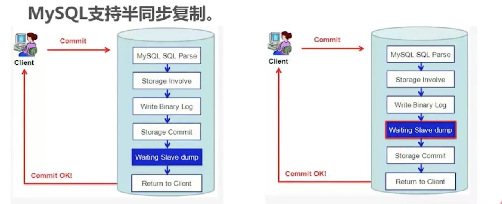
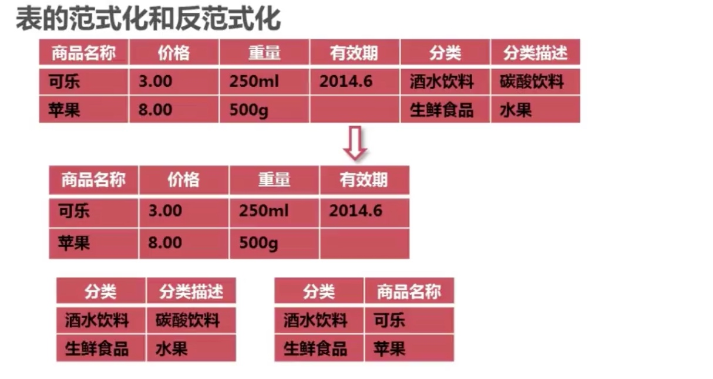
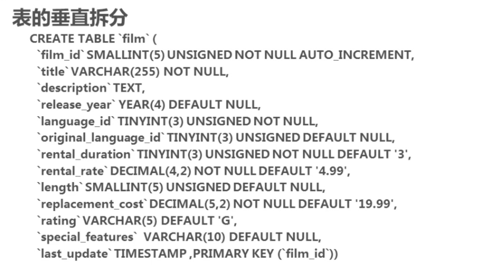
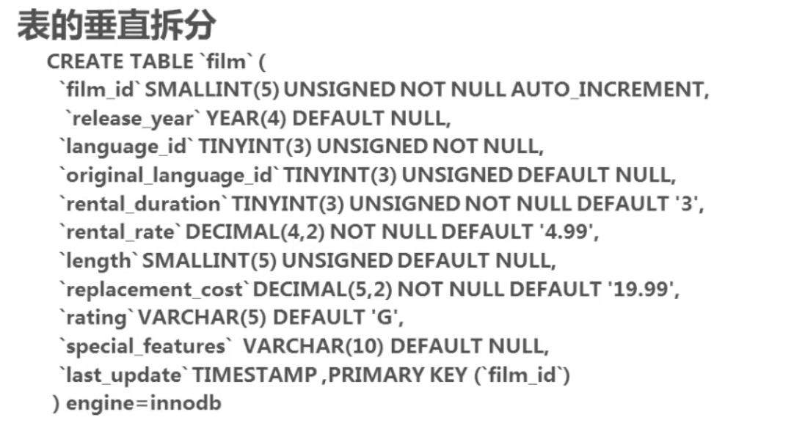
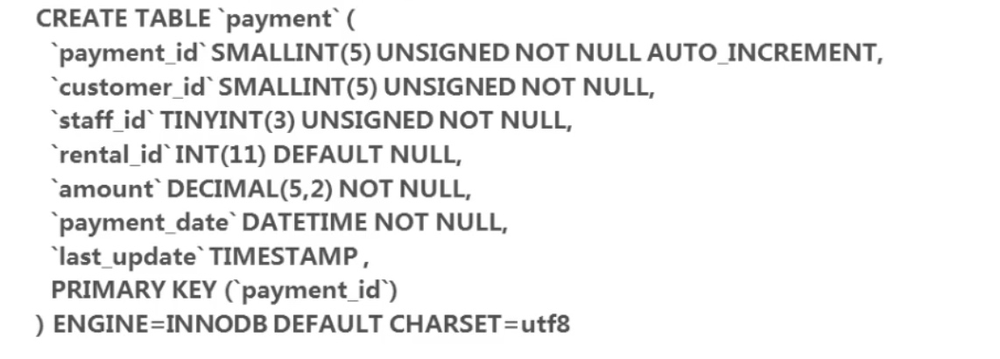

5.7之后变更操作将不用重启服务器
主从复制
5.6和5.7半同步复制的不同

如何实现基于日志点的复制
创建实验数据
root@localhost:(none) 10:14:36 >create database dba;
Query OK, 1 row affected (0.00 sec)
root@localhost:(none) 10:16:59 >use dba;
Database changed
root@localhost:dba 10:17:06 >create table t(id int,c1 varchar(10),primary key(id));
Query OK, 0 rows affected (0.05 sec)
root@localhost:dba 10:17:38 >insert into t values(1,'aa'),(2,'cc'),(3,'dd');
Query OK, 3 rows affected (0.02 sec)
Records: 3 Duplicates: 0 Warnings: 0
root@localhost:dba 10:18:49 >select * from t;
+----+------+
| id | c1 |
+----+------+
| 1 | aa |
| 2 | cc |
| 3 | dd |
+----+------+
3 rows in set (0.00 sec)
1、在master端建立复制用户
#建使用这种方式建用户，不建议使用一条语句。
root@localhost:(none) 10:13:33 >create user 'dba'@'10.100.4.189' identified by 'Root@bd-yg2017';
Query OK, 0 rows affected (0.00 sec)
root@localhost:(none) 10:13:50 >grant replication slave on *.* to dba@'10.100.4.189';
Query OK, 0 rows affected (0.01 sec)
2、备份master端的数据，并在slave端恢复
MASTER主机上操作：
root@test-mysql-ha-master:~ # mysqldump --single-transaction --master-data=2 --triggers --routines --all-databases -uroot -p > /data/all.sql
Enter password:
root@test-mysql-ha-master:~ # ll /data/all.sql
-rw-r--r-- 1 root root 778295 1月 24 22:33 /data/all.sql
--single-transaction
该选项在导出数据之前提交一个BEGIN SQL语句，BEGIN 不会阻塞任何应用程序且能保证导出时数据库的一致性状态。它只适用于多版本存储引擎，仅InnoDB。本选项和--lock-tables 选项是互斥的，因为LOCK TABLES 会使任何挂起的事务隐含提交。要想导出大表的话，应结合使用--quick 选项。
--master-data
该选项将binlog的位置和文件名追加到输出文件中。如果为1，将会输出CHANGE MASTER 命令；如果为2，输出的CHANGE MASTER命令前添加注释信息。该选项将打开--lock-all-tables 选项，除非--single-transaction也被指定（在这种情况下，全局读锁在开始导出时获得很短的时间；其他内容参考下面的--single-transaction选项）。该选项自动关闭--lock-tables选项。
值为2时，在dump出的SQL中注释掉下change master语句如：
-- CHANGE MASTER TO MASTER_LOG_FILE='mysqld-bin.000002', MASTER_LOG_POS=194;
--triggers
导出触发器。该选项默认启用，用--skip-triggers禁用它。
--routines, -R
导出存储过程以及自定义函数。
在slave上操作
#将全备数据进行恢复到slave实例
root@test-mysql-ha-slave:~ # mysql -uroot -p -S /tmp/mysql3306.sock < /data/all.sql
Enter password:
#验证数据恢复情况
root@localhost:(none) 10:45:27 >show databases;
+--------------------+
| Database |
+--------------------+
| information_schema |
| dba |
| mysql |
| performance_schema |
| sys |
+--------------------+
5 rows in set (0.01 sec)
root@localhost:(none) 10:45:36 >use dba;
Reading table information for completion of table and column names
You can turn off this feature to get a quicker startup with -A
Database changed
root@localhost:dba 10:45:44 >select * from t;
+----+------+
| id | c1 |
+----+------+
| 1 | aa |
| 2 | cc |
| 3 | dd |
+----+------+
3 rows in set (0.00 sec)
3、使用change master 命令配置复制。
5.7之后不建议使用配置文件，建议在slave使用命令进行管理
root@localhost:dba 10:45:54 >change master to master_host='10.100.4.188', master_user='dba',
master_password='Root@bd-yg2017',
master_log_file='mysqld-bin.000002',
master_log_pos=194;
Query OK, 0 rows affected, 2 warnings (0.20 sec)
root@localhost:dba 10:55:07 >start slave;
Query OK, 0 rows affected (0.09 sec)
root@localhost:dba 11:02:51 >show slave status\G
*************************** 1. row ***************************
Slave_IO_State: Waiting for master to send event
Master_Host: 10.100.4.188
Master_User: dba
Master_Port: 3306
Connect_Retry: 60
Master_Log_File: mysqld-bin.000002
Read_Master_Log_Pos: 194
Relay_Log_File: relay-bin.000002
Relay_Log_Pos: 321
Relay_Master_Log_File: mysqld-bin.000002
** Slave_IO_Running: Yes**
**Slave_SQL_Running: Yes**
Replicate_Do_DB:
Replicate_Ignore_DB:
Replicate_Do_Table:
Replicate_Ignore_Table:
Replicate_Wild_Do_Table:
Replicate_Wild_Ignore_Table:
Last_Errno: 0
Last_Error:
Skip_Counter: 0
Exec_Master_Log_Pos: 194
Relay_Log_Space: 522
Until_Condition: None
Until_Log_File:
Until_Log_Pos: 0
Master_SSL_Allowed: No
Master_SSL_CA_File:
Master_SSL_CA_Path:
Master_SSL_Cert:
Master_SSL_Cipher:
Master_SSL_Key:
Seconds_Behind_Master: 0
Master_SSL_Verify_Server_Cert: No
Last_IO_Errno: 0
Last_IO_Error:
Last_SQL_Errno: 0
Last_SQL_Error:
Replicate_Ignore_Server_Ids:
Master_Server_Id: 18882
Master_UUID: e271ce20-3b0a-4722-ba8d-1deab072319b
Master_Info_File: mysql.slave_master_info
SQL_Delay: 0
SQL_Remaining_Delay: NULL
Slave_SQL_Running_State: Slave has read all relay log; waiting for more updates
Master_Retry_Count: 86400
Master_Bind:
Last_IO_Error_Timestamp:
Last_SQL_Error_Timestamp:
Master_SSL_Crl:
Master_SSL_Crlpath:
Retrieved_Gtid_Set:
Executed_Gtid_Set: d502a626-d64c-4755-819e-7fe6954cfda5:1-6
Auto_Position: 0
Replicate_Rewrite_DB:
Channel_Name:
Master_TLS_Version:
1 row in set (0.00 sec)
验证
在主上添加数据或删除数据查看从库变化
#master操作
root@localhost:dba 11:06:15 >insert into t values(4,'eee'),(5,'ddd');
Query OK, 2 rows affected (0.01 sec)
Records: 2 Duplicates: 0 Warnings: 0
root@localhost:dba 11:06:48 >select * from t;
+----+------+
| id | c1 |
+----+------+
| 1 | aa |
| 2 | cc |
| 3 | dd |
| 4 | eee |
| 5 | ddd |
+----+------+
5 rows in set (0.00 sec)
#slave 验证
root@localhost:dba 11:02:59 >use dba;
Database changed
root@localhost:dba 11:08:14 >select * from t;
+----+------+
| id | c1 |
+----+------+
| 1 | aa |
| 2 | cc |
| 3 | dd |
| 4 | eee |
| 5 | ddd |
+----+------+
5 rows in set (0.00 sec)
分析：数据已同步过来
主从管理的系统视图
root@localhost:dba 11:08:22 >use performance_schema;
Reading table information for completion of table and column names
You can turn off this feature to get a quicker startup with -A
Database changed
root@localhost:performance_schema 11:16:12 >show tables like 'replication%';
+---------------------------------------------+
| Tables_in_performance_schema (replication%) |
+---------------------------------------------+
| replication_applier_configuration |
| replication_applier_status |
| replication_applier_status_by_coordinator |
| replication_applier_status_by_worker |
| replication_connection_configuration |
| replication_connection_status |
| replication_group_member_stats |
| replication_group_members |
+---------------------------------------------+
8 rows in set (0.00 sec)
3.1.6 第6章 服务器硬件优化 - 安红雷
慕课网视频地址：https://www.imooc.com/learn/194
课程要点：
硬件优化的成本较高，但是效果却不是最有效的一种方式
CPU的选择
根据MYSQL的特性来选择cpu，参考的因素有：
1、mysql的一些工作只能使用到单核CPU(要求单核速度更快的CPU)
一个sql的执行只能用到一个CPU
复制进程也只能用到一个CPU
2、mysql不同的版本对cpu核数的支持并不是越多越快有一定的限制。
5.5建议不要超过32核的CPU，过多会导致性能下降
总结，建议选择单核处理速度更快的CPU，不要迷信过多的核数
硬盘的选择
1、raid选择：
根据不同raid的特性针对性的选择不同场景的类型
以写为主，raid0
以读为主，raid1,raid5
安全为主，raid1,raid5
raid0+1或1+0
2、磁盘阵列的选择
SNA或NAT是否适合数据库？
1、常用于高可用解决方案
2、顺序读写效率很高，但是随机读写不如人意
3、数据库随机读写比率很高。
3. 对于本章9个节点的学习，做好总结的学习笔记。
安红雷、刘宏伟、王恩志可以给予运维环境方面的支持。
作业：
查看视频，针对以上9个学习点，形成笔记，转换PDF上传至Seafile。
注意事项：
完成学习后，修改计划完成日期为真实完成日期。
3.1.5 第5章 系统配置优化 - 安红雷
慕课网视频地址：https://www.imooc.com/learn/194
课程要点：
操作系统配置优化
数据库是基于操作系统的，目前大多数mysql都是安装在linux系统之上的，对于操作系统的一些参数配置也会影响到mysql的性能，
内核文件配置——/etc/sysctl.conf
网络方面
增加tcp支持的队列数
net.ipv4.tcp_max_syn_backlog = 65535
#减少断开连接时，资源回收(如：netstat -antlp 中的time wait 和time out 的连接数)
net.ipv4.tcp_max_tw_buckets = 8000
net.ipv4.tcp_tw_reuse = 1
net.ipv4.tcp_tw_recycle = 1
net.ipv4.tcp_fin_timeout = 10
打开文件连接数
查看或修改打开文件数量的限制
root@test-mysql-ha-master:~ # ulimit -a
core file size (blocks, -c) 0
data seg size (kbytes, -d) unlimited
scheduling priority (-e) 0
file size (blocks, -f) unlimited
pending signals (-i) 31205
max locked memory (kbytes, -l) 64
max memory size (kbytes, -m) unlimited
open files (-n) 65536
pipe size (512 bytes, -p) 8
POSIX message queues (bytes, -q) 819200
real-time priority (-r) 0
stack size (kbytes, -s) 8192
cpu time (seconds, -t) unlimited
max user processes (-u) 31205
virtual memory (kbytes, -v) unlimited
file locks (-x) unlimited
root@test-mysql-ha-master:~ # tail -5 /etc/security/limits.conf
# End of file
* soft nofile 65536
* hard nofile 65536
系统其他
1、防火墙——对网络会有损耗，特别是对连接数据高的服务器，影响更大
2、selinux——对系统性能有影响
mysql配置文件优化
mysql可以通过启动时指定配置参数和使用配置文件两种方法进行配置。
查找配置文件的方法：
root@anhonglei-test-bjqw:~ # mysqld --verbose --help | grep -A 1 'Default option'
Default options are read from the following files in the given order:
/etc/my.cnf /etc/mysql/my.cnf /usr/local/mysql-5.7.20/etc/my.cnf ~/.my.cnf
注：如果多个位置存在配置文件，则后面的会覆盖前面的！！！
常用参数说明：
innodb_buffer_pool_size
```
非常重要的一个参数，用于配置innodb的缓冲池：如果单独的数据库中只有innodb表，推荐配置量为总内存的75%或尽可能大于所有引擎表和索引大小之和
innodb_buffer_pool_size >= total MB
如何使用mysql 命令行 查看mysql表大小、数据大小、索引大小
select * from information_schema.TABLES
where information_schema.TABLES.TABLE_SCHEMA='databasename'
and information_schema.TABLES.TABLE_NAME='tablename'\G
返回结果:
*************************** 1. row ***************************
TABLE_CATALOG: def
TABLE_SCHEMA: databasename
TABLE_NAME: tablename
TABLE_TYPE: BASE TABLE
ENGINE: MyISAM
VERSION: 10
ROW_FORMAT: Dynamic
TABLE_ROWS: 6422930
AVG_ROW_LENGTH: 213
DATA_LENGTH: 1370884700
MAX_DATA_LENGTH: 281474976710655
INDEX_LENGTH: 412930048
DATA_FREE: 0
AUTO_INCREMENT: 6422931
CREATE_TIME: 2012-05-11 05:00:02
UPDATE_TIME: 2012-05-22 15:12:06
CHECK_TIME: 2012-05-11 09:58:52
TABLE_COLLATION: utf8_general_ci
CHECKSUM: NULL
CREATE_OPTIONS:
TABLE_COMMENT: 'table comment'
1 row in set (0.00 sec)
其中：
information_schema.TABLES.TABLE_SCHEMA = ‘databasename’ and information_schema.TABLES.TABLE_NAME = ‘tablename’
信息存储在information_schema.TABLES这个表中，TABLE_SCHEMA 对应数据库名，TABLE_NAME 对应表名。
TABLE_ROWS 代表拥有的数据行数。
总大小 = DATA_LENGTH(数据大小) + INDEX_LENGTH(索引大小)
结果以字节为单位，除1024为K，除1048576(=1024*1024)为M。
--本篇文章转自：http://digdeeply.org/archives/05222029.html
innodb_buffer_pool_instances
可以控制缓冲池的个数，默认情况下只有一个缓冲池——5.5之后新加参数（主要作用是把缓冲池分成多少份，因为有些资源是独占资源的，这样就可以增加并发性，例：4份或8份）
innodb_log_buffer_size
innodb log 缓冲的大小，由于日志最长每秒钟就会刷新所以一般不用太大（能够存储1秒的事务日志的大小就可以了）。
innodb_flush_log_at_trx_commit
关键参数，对innodb的IO效率影响很大（决定多长时间将数据库的变更操作刷新到磁盘）。默认值为1，可以取0（每1秒钟刷新日志到磁盘中），1（每一次提交变更都刷新到磁盘——最安全但也最耗IO），2（每一次提交将日志刷新到缓冲区，每1秒钟将缓冲区的日志刷新到磁盘——最多丢失1秒的数据）三个值，一般建议设为2，但如果数据安全性要求比较高则使用默认值1
innodb_read_io_threads
innodb_write_io_threads
这两个参数决定了innodb读写的IO进程数，默认为4；
根据CPU的核数和读写的负载情况去调整，到底是读负载大还是写负载大，灵活调整
innodb_file_per_table
关键参数，控制innodb每一个表使用独立的表空间，默认为OFF，也就是所有表都会建立在共享表空间中，
坏处：
1、这样就会导致共享表空间的IO成为一个瓶颈，写入共享表空间是按顺序去写入的，因为只有一个文件，所以并发写入时就会占用大量的IO，效率就会降低。
2、innodb共享表空间是无法收缩的，如果要收缩共享表空间，就需要将期中的所有数据导出来，然后再导进去进行收缩空间。
建议开启：这就针对每一个表都会有一个临时表空间，当对一个表进行删除或truce操作时就会马上回收这部分的表空间。也由于生成了多个文件所以在并发读写时效率会提高
innodb_stats_on_metadata
决定了mysql在什么情况下会刷新innodb表的统计信息
对于数据库优化器如何使用表中的索引，是需要借助于表中的统计信息的。通常情况下要对表的统计信息进行刷新。以保持优化器能正确的使用到正确的索引，
如果统计信息的刷新频率较高的话，也会影响数据库的性能，默认情况下mysql在查询一些系统表，比如说：information下的一些表结构时，或使用show create table 时，这时都会对这些表的统计信息进行刷新（这时侯是没必须刷新的）所以建议关闭这种刷新，参数设置为OFF，而是改成定时的手动刷新
###使用第三方配置工具优化MYSQL配置
percon configuration wizard
第三方配置工具网址：https//tools.percona.com/wizard
回答几个问题：

1、定义服务器的角色：生产还是测试
2、服务器是否是专用的服务器，有没有复用的情况，建议独立使用
3、服务器负载的类型是什么（应用场景：oltp/olap——是分析型的数据库、统计型数据库还是以读为主写为辅的数据库、）
4、服务器的集群角色，是master还是slave
第二页

1、服务器的类型，是硬件还是云
2、是否使用虚拟化技术
3、存储硬盘的类型
4、CPU的数量，以超线程为单位：如两个8核，2X8X2(超线程)
5、内存的数量
6、操作系统的类型
7、表的数量
第三页：

1、数据库的版本
2、数据库存放的位置
3、引擎的选择
4、mysql选择的版本，社区版还是企业版
第四页：——此时会给出一个建议（默认即可）

1、innodb buffer的大小
2、log大小
3、设置innodb的存储默认值
4、io类型
5、等
第五页——此时会给出建议值

系统变量的设置
对于config the table cache 可以设置成 1024（根据表的数据量来里德配置），其他的默认即可
第六页——安全相关的配置

为了保证数据的一致性全选即可，
第七页：

输入服务器的机器名并同意
设置收配置的信息

这些只是一个建议而已
###3. 对于本章9个节点的学习，做好总结的学习笔记。
安红雷、刘宏伟、王恩志可以给予运维环境方面的支持。
作业：
查看视频，针对以上9个学习点，形成笔记，转换PDF上传至Seafile。
注意事项：
完成学习后，修改计划完成日期为真实完成日期。
3.1.4 第4章 数据库结构优化 - 安红雷
慕课网视频地址：https://www.imooc.com/learn/194
课程要点：
选择合适的数据类型
数据库类型的选择，重点在于合适两字，如何确定选择的数据类型是否合适？
1、使用可以存下你要存数据的最小数据类型
2、使用简单的数据类型。int要比varchar处理逻辑简单高效
3、尽可能使用not null的定义字段
在设计或创建表时，最好加上not null属性或给一个默认值，这是由于innodb对于非not null的列需要额外的字段来存储，会增加IO和存储的开销
4、尽量少用text类型，非用不可最好考虑分表
必须使用时，建议将这些类型的列分别提出来，创建一个附加表中，这样可以提高主表的查询效率也能在根据需要的情况去附加表去查询
使用int 存储日期时间，利用from_unixtime(),unix_timestamp()两个函数来进行转换。
root@localhost:sakila 09:03:08 >create table test(id int auto_increment not null,timetr int,primary key(id));
Query OK, 0 rows affected (0.04 sec)
root@localhost:sakila 09:04:41 >insert into test(timetr) values(unix_timestamp('2014-06-01 13:12:00'));
Query OK, 1 row affected (0.00 sec)
root@localhost:sakila 09:05:36 >select from_unixtime(timetr) from test;
+-----------------------+
| from_unixtime(timetr) |
+-----------------------+
| 2014-06-01 13:12:00 |
+-----------------------+
1 row in set (0.00 sec)
使用bigint来存储IP地址，利用inet_aton(),inet_ntoa()两个函数来转换
root@localhost:sakila 09:06:03 >create table sessions(id int auto_increment not null,ipaddress bigint,primary key(id));
Query OK, 0 rows affected (0.03 sec)
root@localhost:sakila 09:17:33 >insert into sessions(ipaddress) values(inet_aton('192.168.0.1'));
Query OK, 1 row affected (0.01 sec)
root@localhost:sakila 09:18:35 >select inet_ntoa(ipaddress) from sessions;
+----------------------+
| inet_ntoa(ipaddress) |
+----------------------+
| 192.168.0.1 |
+----------------------+
1 row in set (0.00 sec)
分析：
这样不仅在空间上可以节约，另外在IP地址的对比上也有好处，因为整型的对比比varchar更简洁高效
数据库表的范式化优化
表的范式化
范式化是指数据库设计的规范，目前说到范式化一般是指第三设计范式，也就是要求数据表不存在非关键字段对任意候选关键字段的传递函数依赖则符合第三范式
不符合第三范式要求存在的一些问题：
1、数据冗余：（分类，分类描述）对于每一个商品都会进行记录
2、数据的插入异常
3、数据的更新异常
4、数据的删除异常

反范式化
反范式化是指为了查询效率的考虑把原本符合第三范式的表适当的增加冗余，以达到优化查询效率的目的，反范式化是一种以空间换取时间的操作（如果完全遵照范式化操作，在进行查询时会关联很多的表，但表关联较多时就会影响查询效率）

这样优化这种SQL是从语句角度会很难操作。
表的垂直拆分
所谓的垂直拆分，就是把原来的一个有很多列的表拆分成多个表，这解决了表的宽度问题。通常垂直拆分可以按以下原则进行：
1、把不常用的字段单独存放到一个表中
2、把大字段独立存放到一个表中
3、把经常一起使用的字段放到一起


表的水平拆分
表的水平拆分主是是为了解决单表的数据量过大的问题，水平拆分的表每一个表的结构都是完全一致的。

常用的水平拆分方法为：
1、对customer_id 进行hash运算，如果要拆分成5个表则使用mod(customer_id,5)取出0-5个值
2、针对不同的hashID把数据存到不同的表中
挑战
1、跨分区表进行数据查询
2、统计及后台报表操作
通常情况下，需要区分开前后台业务，我们需要把统计后台的分区表汇总成一个汇总表，（因为前台讲究是效率，后台考虑的是数据的完整性无需很效率）
3. 对于本章9个节点的学习，做好总结的学习笔记。
安红雷、刘宏伟、王恩志可以给予运维环境方面的支持。
作业：
查看视频，针对以上9个学习点，形成笔记，转换PDF上传至Seafile。
注意事项：
完成学习后，修改计划完成日期为真实完成日期。
3.1.3 第3章 索引优化 - 安红雷
慕课网视频地址：https://www.imooc.com/learn/194
课程要点：
索引的优化
如何选择合适的列建立索引
1、在where从句、group by 从名、order by从句、on 从句出现的列；
当查询频率非常高、索引包含的列比较少的时候可以通过覆盖索引（包含了表的所有列）对这个SQL进行优化
2、索引的字段越小越好；
考虑到数据存储是以页为单位的，如果一页中存储的数据越多，一次IO便能获取的数据量就越大，这样就提高 的IO效率。
3、离散度大的列放到联合索引的前面
往往离散度越大的列的选择度就越高，放到联合索引的前面效果就会越好
root@localhost:sakila 09:55:33 >root@localhost:sakila 09:55:33 >select * from payment where staff_id = 2 and customer_id = 584;
+------------+-------------+----------+-----------+--------+---------------------+---------------------+
| payment_id | customer_id | staff_id | rental_id | amount | payment_date | last_update |
+------------+-------------+----------+-----------+--------+---------------------+---------------------+
| 15636 | 584 | 2 | 379 | 4.99 | 2005-05-27 09:25:32 | 2006-02-15 22:22:44 |
| 15639 | 584 | 2 | 1436 | 3.99 | 2005-06-15 18:35:40 | 2006-02-15 22:22:45 |
| 15640 | 584 | 2 | 3317 | 6.99 | 2005-06-21 08:22:32 | 2006-02-15 22:22:45 |
| 15641 | 584 | 2 | 3741 | 2.99 | 2005-07-06 12:00:18 | 2006-02-15 22:22:45 |
| 15642 | 584 | 2 | 3895 | 7.99 | 2005-07-06 19:04:24 | 2006-02-15 22:22:45 |
| 15645 | 584 | 2 | 6954 | 0.99 | 2005-07-26 23:55:13 | 2006-02-15 22:22:45 |
| 15649 | 584 | 2 | 8879 | 4.99 | 2005-07-30 00:16:02 | 2006-02-15 22:22:45 |
| 15650 | 584 | 2 | 9451 | 3.99 | 2005-07-30 22:10:17 | 2006-02-15 22:22:45 |
| 15652 | 584 | 2 | 10073 | 2.99 | 2005-07-31 19:53:15 | 2006-02-15 22:22:46 |
| 15654 | 584 | 2 | 10966 | 0.99 | 2005-08-02 04:00:47 | 2006-02-15 22:22:46 |
| 15656 | 584 | 2 | 11500 | 6.99 | 2005-08-16 23:01:22 | 2006-02-15 22:22:46 |
| 15657 | 584 | 2 | 12507 | 8.99 | 2005-08-18 13:19:13 | 2006-02-15 22:22:46 |
| 15658 | 584 | 2 | 12541 | 2.99 | 2005-08-18 14:18:30 | 2006-02-15 22:22:46 |
| 15659 | 584 | 2 | 12693 | 5.99 | 2005-08-18 20:10:19 | 2006-02-15 22:22:46 |
| 15661 | 584 | 2 | 14102 | 5.99 | 2005-08-21 00:35:21 | 2006-02-15 22:22:46 |
| 15662 | 584 | 2 | 14230 | 5.99 | 2005-08-21 04:57:29 | 2006-02-15 22:22:46 |
| 15663 | 584 | 2 | 14447 | 4.99 | 2005-08-21 12:12:05 | 2006-02-15 22:22:46 |
+------------+-------------+----------+-----------+--------+---------------------+---------------------+
17 rows in set (0.01 sec)
如何判断列的离散程序：
1、查看表的数据结构：
root@localhost:sakila 09:55:50 >desc payment;
+--------------+----------------------+------+-----+-------------------+-----------------------------+
| Field | Type | Null | Key | Default | Extra |
+--------------+----------------------+------+-----+-------------------+-----------------------------+
| payment_id | smallint(5) unsigned | NO | PRI | NULL | auto_increment |
| customer_id | smallint(5) unsigned | NO | MUL | NULL | |
| staff_id | tinyint(3) unsigned | NO | MUL | NULL | |
| rental_id | int(11) | YES | MUL | NULL | |
| amount | decimal(5,2) | NO | | NULL | |
| payment_date | datetime | NO | MUL | NULL | |
| last_update | timestamp | YES | | CURRENT_TIMESTAMP | on update CURRENT_TIMESTAMP |
+--------------+----------------------+------+-----+-------------------+-----------------------------+
7 rows in set (0.01 sec)
2、对列进行统计操作：（唯一值越多，离散程序就越好，可选择性就会越高）
root@localhost:sakila 10:13:01 >select count(distinct customer_id),count(distinct staff_id ) from payment;
+-----------------------------+---------------------------+
| count(distinct customer_id) | count(distinct staff_id ) |
+-----------------------------+---------------------------+
| 599 | 2 |
+-----------------------------+---------------------------+
1 row in set (0.01 sec)
由于customer_id的离散度更大，所以建索引应该使用：index(customer_id,staff_id)
索引优化的方法
通常：索引可以优化查询效率，但会降低写入效率，
不过过多的索引不但会引起写入效率也会影响查询：这是由于数据库在进行查询的时候，会选择哪一个索引进行查询，如果索引过多，就是增加分析判断的过程，这样就会导致查询效率的降低。
维护索引及优化——重复及冗余索引
1、如何找到重复和冗余的索引
重复索引：相同的列以相同的顺序建立的同类型的索引，如主键和唯一索引。
冗余索引：多个索引的前缀列相同，或是在联合索引中包含了主键的索引（因为innodb中的每一个索引都会包含主键）
#需要使用information_schema数据库中的统计报表
root@localhost:sakila 10:16:00 >use information_schema;
Reading table information for completion of table and column names
You can turn off this feature to get a quicker startup with -A
Database changed
#查找重复索引的通用语句——只能查找到索引的前缀，并不能查到哪些索引是包含主键的
root@localhost:information_schema 10:40:25 >select a.table_schema as '数据名',a.table_name as '表名',a.index_name as '索引1',b.index_name as '索引2',a.column_name as '重 复列名' from statistics a join statistics b on a.table_schema=b.table_schema and a.table_name=b.table_name and a.seq_in_index=b.seq_in_index and a.column_name = b.column_name where a.seq_in_index = 1 and a.index_name<> b.index_name;
Empty set (0.02 sec)
将查到的重复或冗余索引删除即可。


2、使用工具进行索引优化
使用pt-duplicate-key-checker 工具：检查重复和冗余索引
root@anhonglei-test-bjqw:~ # pt-duplicate-key-checker -uroot -p'Root@bd-yg2017' -h localhost
*******************************************************************
Using the default of SSL_verify_mode of SSL_VERIFY_NONE for client
is deprecated! Please set SSL_verify_mode to SSL_VERIFY_PEER
together with SSL_ca_file|SSL_ca_path for verification.
If you really don't want to verify the certificate and keep the
connection open to Man-In-The-Middle attacks please set
SSL_verify_mode explicitly to SSL_VERIFY_NONE in your application.
*******************************************************************
at /bin/pt-duplicate-key-checker line 3849.
# ########################################################################
# Summary of indexes
# ########################################################################
# Total Indexes 111

维护索引及优化——删除不用的索引
目前mysql中还没有记录索引的使用情况，但是在perconMYSQL和mariaDB中可以通过index_statistics表来查看哪些索引未使用，但在mysql中目前只能通过慢查询日志配合pt-index-usage工具来进行索引使用情况的分析。
如果一主多从的情况：如果在不同的从上负载 的业务是不一样的情况，那么在收集慢日志时要收集所有的主从服务器，并对这些进行统一的分析。
root@anhonglei-test-bjqw:~ # pt-index-usage -uroot -p'Root@bd-yg2017' /data/mysql/3306/logs/slow.log
ALTER TABLE `sakila`.`actor` DROP KEY `idx_actor_last_name`; -- type:non-unique
ALTER TABLE `sakila`.`film` DROP KEY `idx_fk_language_id`, DROP KEY `idx_fk_original_language_id`, DROP KEY `idx_title`; -- type:non-unique
ALTER TABLE `sakila`.`film_actor` DROP KEY `idx_fk_film_id`; -- type:non-unique
ALTER TABLE `sakila`.`payment` DROP KEY `fk_payment_rental`, DROP KEY `idx_fk_customer_id`, DROP KEY `idx_fk_staff_id`, DROP KEY `idx_paydate`; -- type:non-unique
ALTER TABLE `sakila`.`store` DROP KEY `idx_fk_address_id`; -- type:non-unique
root@anhonglei-test-bjqw:~ #
3. 对于本章9个节点的学习，做好总结的学习笔记。
安红雷、刘宏伟、王恩志可以给予运维环境方面的支持。
作业：
查看视频，针对以上9个学习点，形成笔记，转换PDF上传至Seafile。
注意事项：
完成学习后，修改计划完成日期为真实完成日期。
3.1.2 第2章 SQL语句优化 - 安红雷
慕课网视频地址：https://www.imooc.com/learn/194
课程要点：
1. 演示数据库我会调配资源提供给大家使用；
下载sakila数据库
http://dev.mysql.com/doc/index-other.html
tar xf sakila-db.tar
source /data/backup/sakila-db/sakila-schema.sql
source /data/backup/sakila-db/sakila-data.sql;
进入示例：
root@localhost:(none) 06:39:23 >use sakila;
Reading table information for completion of table and column names
You can turn off this feature to get a quicker startup with -A
Database changed
root@localhost:sakila 06:39:33 >show tables;
+----------------------------+
| Tables_in_sakila |
+----------------------------+
| actor |
| actor_info |
| address |
| category |
| city |
| country |
| customer |
| customer_list |
| film |
| film_actor |
| film_category |
| film_list |
| film_text |
| inventory |
| language |
| nicer_but_slower_film_list |
| payment |
| rental |
| sales_by_film_category |
| sales_by_store |
| staff |
| staff_list |
| store |
+----------------------------+
23 rows in set (0.00 sec)
2. SQL语句的优化
第一步：哪些SQL及索引是需要优化的——如何发现有问题的SQL
主要使用Mysql慢日志对效率有问题的SQL进行监控
开启及设置慢查询日志——针对mysql实例非数据库
root@localhost:sakila 06:56:56 >show variables like 'slow_query_log';
+----------------+-------+
| Variable_name | Value |
+----------------+-------+
| slow_query_log | ON |
+----------------+-------+
1 row in set (0.00 sec)
root@localhost:sakila 06:58:05 >show variables like 'slow_query_log_file';
+---------------------+--------------------------------+
| Variable_name | Value |
+---------------------+--------------------------------+
| slow_query_log_file | /data/mysql/3306/logs/slow.log |
+---------------------+--------------------------------+
1 row in set (0.00 sec)
**开启记录没有使用索引的SQL**
root@localhost:sakila 06:58:41 >set global log_queries_not_using_indexes=on;
Query OK, 0 rows affected (0.00 sec)
**慢查询日志设置的记录超时时间**
root@localhost:sakila 07:01:53 >set global long_query_time=1;
Query OK, 0 rows affected (0.00 sec)
查询语句的慢查询结构信息
root@localhost:sakila 07:02:17 >select * from store limit 10;
+----------+------------------+------------+---------------------+
| store_id | manager_staff_id | address_id | last_update |
+----------+------------------+------------+---------------------+
| 1 | 1 | 1 | 2006-02-15 04:57:12 |
| 2 | 2 | 2 | 2006-02-15 04:57:12 |
+----------+------------------+------------+---------------------+
2 rows in set (0.00 sec)
root@localhost:sakila 07:18:09 >show variables like 'slow%';
+---------------------+--------------------------------+
| Variable_name | Value |
+---------------------+--------------------------------+
| slow_launch_time | 2 |
| slow_query_log | ON |
| slow_query_log_file | /data/mysql/3306/logs/slow.log |
+---------------------+--------------------------------+
3 rows in set (0.00 sec)
root@anhonglei-test-bjqw:~ # tail -fn10 /data/mysql/3306/logs/slow.log
# User@Host: root[root] @ localhost [] Id: 4
# Query_time: 3.012571 Lock_time: 0.000523 Rows_sent: 0 Rows_examined: 0
SET timestamp=1513930484;
GRANT ALL PRIVILEGES ON *.* TO 'admin'@'localhost' IDENTIFIED WITH 'mysql_native_password' AS '*CC5F1D1D66012B7EE904E3C06451B244778D4C31';
执行时间
# Time: 2018-01-13T19:18:09.233197+08:00
执行主机的信息
# User@Host: root[root] @ localhost [] Id: 21
SQL语句执行的信息：查询执行时间，锁定时间，发送的行数，扫描的行数
# Query_time: 0.000597 Lock_time: 0.000207 Rows_sent: 2 Rows_examined: 2
use sakila;
SQL执行的时间：时间戳形式
SET timestamp=1515842289;
执行的SQL内容
select * from store limit 10;
分析慢查询日志：使用工具批量分析慢查询日志得出结果
Mysql自带工具：mysqldumpslow
root@anhonglei-test-bjqw:~ # mysqldumpslow --help
Usage: mysqldumpslow [ OPTS... ] [ LOGS... ]
Parse and summarize the MySQL slow query log. Options are
--verbose verbose
--debug debug
--help write this text to standard output
-v verbose
-d debug
-s ORDER what to sort by (al, at, ar, c, l, r, t), 'at' is default
al: average lock time
ar: average rows sent
at: average query time
c: count
l: lock time
r: rows sent
t: query time
-r reverse the sort order (largest last instead of first)
-t NUM just show the top n queries
-a don't abstract all numbers to N and strings to 'S'
-n NUM abstract numbers with at least n digits within names
-g PATTERN grep: only consider stmts that include this string
-h HOSTNAME hostname of db server for *-slow.log filename (can be wildcard),
default is '*', i.e. match all
-i NAME name of server instance (if using mysql.server startup script)
-l don't subtract lock time from total time
root@anhonglei-test-bjqw:~ # mysqldumpslow -t 1 /data/mysql/3306/logs/slow.log
Reading mysql slow query log from /data/mysql/3306/logs/slow.log
执行次数，执行时间，锁时间，发送的行数，执行主机信息，
Count: 1 Time=3.01s (3s) Lock=0.00s (0s) Rows=0.0 (0), root[root]@localhost
执行的语句
GRANT ALL PRIVILEGES ON *.* TO 'S'@'S' IDENTIFIED WITH 'S' AS 'S'
常用分析工具：pt-query-digest
pt-query-digest是用于分析mysql慢查询的一个工具，它也可以分析binlog、General log、slowlog，也可以通过SHOWPROCESSLIST或者通过tcpdump抓取的MySQL协议数据来进行分析。可以把分析结果输出到文件中，分析过程是先对查询语句的条件进行参数化，然后对参数化以后的查询进行分组统计，统计出各查询的执行时间、次数、占比等，可以借助分析结果找出问题进行优化。
1:安装于Perl相关的模块
yum -y install perl perl-IO-Socket-SSL perl-DBD-MySQL perl-Time-HiRes
2:下载和安装percona toolkit的包
wget https://www.percona.com/downloads/percona-toolkit/2.2.16/RPM/percona-toolkit-2.2.16-1.noarch.rpm && yum localinstall -y percona-toolkit-2.2.16-1.noarch.rpm
root@anhonglei-test-bjqw:~ # pt-query-digest --help
pt-query-digest analyzes MySQL queries from slow, general, and binary log files.
It can also analyze queries from C<SHOW PROCESSLIST> and MySQL protocol data
from tcpdump. By default, queries are grouped by fingerprint and reported in
descending order of query time (i.e. the slowest queries first). If no C<FILES>
are given, the tool reads C<STDIN>. The optional C<DSN> is used for certain
options like L<"--since"> and L<"--until">. For more details, please use the
--help option, or try 'perldoc /bin/pt-query-digest' for complete documentation.
Usage: pt-query-digest [OPTIONS] [FILES] [DSN]
Options:
--ask-pass Prompt for a password when connecting to MySQL
--attribute-aliases=a List of attribute|alias,etc (default db|Schema)
--attribute-value-limit=i A sanity limit for attribute values (default
4294967296)
--charset=s -A Default character set
--config=A Read this comma-separated list of config files;
if specified, this must be the first option on
the command line
--[no]continue-on-error Continue parsing even if there is an error (
default yes)
--[no]create-history-table Create the --history table if it does not exist (
default yes)
--[no]create-review-table Create the --review table if it does not exist (
default yes)
--daemonize Fork to the background and detach from the shell
--database=s -D Connect to this database
--defaults-file=s -F Only read mysql options from the given file
--embedded-attributes=a Two Perl regex patterns to capture pseudo-
attributes embedded in queries
--expected-range=a Explain items when there are more or fewer than
expected (default 5,10)
--explain=d Run EXPLAIN for the sample query with this DSN
and print results
--filter=s Discard events for which this Perl code doesn't
return true
--group-by=A Which attribute of the events to group by (
default fingerprint)
--help Show help and exit
--history=d Save metrics for each query class in the given
table. pt-query-digest saves query metrics (query
time, lock time, etc.) to this table so you can
see how query classes change over time
--host=s -h Connect to host
--ignore-attributes=a Do not aggregate these attributes (default arg,
cmd, insert_id, ip, port, Thread_id, timestamp,
exptime, flags, key, res, val, server_id, offset,
end_log_pos, Xid)
--inherit-attributes=a If missing, inherit these attributes from the
last event that had them (default db,ts)
--interval=f How frequently to poll the processlist, in
seconds (default .1)
--iterations=i How many times to iterate through the collect-and-
report cycle (default 1)
--limit=A Limit output to the given percentage or count (
default 95%:20)
--log=s Print all output to this file when daemonized
--order-by=A Sort events by this attribute and aggregate
function (default Query_time:sum)
--outliers=a Report outliers by attribute:percentile:count (
default Query_time:1:10)
--output=s How to format and print the query analysis
results (default report)
--password=s -p Password to use when connecting
--pid=s Create the given PID file
--port=i -P Port number to use for connection
--processlist=d Poll this DSN's processlist for queries, with --
interval sleep between
--progress=a Print progress reports to STDERR (default time,30)
--read-timeout=m Wait this long for an event from the input; 0 to
wait forever (default 0). Optional suffix s=
seconds, m=minutes, h=hours, d=days; if no
suffix, s is used.
--[no]report Print query analysis reports for each --group-by
attribute (default yes)
--report-all Report all queries, even ones that have been
reviewed
--report-format=A Print these sections of the query analysis
report (default rusage,date,hostname,files,header,
profile,query_report,prepared)
--report-histogram=s Chart the distribution of this attribute's
values (default Query_time)
--resume=s If specified, the tool writes the last file
offset, if there is one, to the given filename
--review=d Save query classes for later review, and don't
report already reviewed classes
--run-time=m How long to run for each --iterations. Optional
suffix s=seconds, m=minutes, h=hours, d=days; if
no suffix, s is used.
--run-time-mode=s Set what the value of --run-time operates on (
default clock)
--sample=i Filter out all but the first N occurrences of
each query
--set-vars=A Set the MySQL variables in this comma-separated
list of variable=value pairs
--show-all=H Show all values for these attributes
--since=s Parse only queries newer than this value (parse
queries since this date)
--socket=s -S Socket file to use for connection
--timeline Show a timeline of events
--type=A The type of input to parse (default slowlog)
--until=s Parse only queries older than this value (parse
queries until this date)
--user=s -u User for login if not current user
--variations=A Report the number of variations in these
attributes' values
--version Show version and exit
--[no]version-check Check for the latest version of Percona Toolkit,
MySQL, and other programs (default yes)
--watch-server=s This option tells pt-query-digest which server IP
address and port (like "10.0.0.1:3306") to watch
when parsing tcpdump (for --type tcpdump); all
other servers are ignored
Option types: s=string, i=integer, f=float, h/H/a/A=comma-separated list, d=DSN, z=size, m=time
Rules:
This tool accepts additional command-line arguments. Refer to the SYNOPSIS and usage information for details.
DSN syntax is key=value[,key=value...] Allowable DSN keys:
KEY COPY MEANING
=== ==== =============================================
A yes Default character set
D yes Default database to use when connecting to MySQL
F yes Only read default options from the given file
P yes Port number to use for connection
S yes Socket file to use for connection
h yes Connect to host
p yes Password to use when connecting
t no The --review or --history table
u yes User for login if not current user
If the DSN is a bareword, the word is treated as the 'h' key.
Options and values after processing arguments:
--ask-pass FALSE
--attribute-aliases db|Schema
--attribute-value-limit 4294967296
--charset (No value)
--config /etc/percona-toolkit/percona-toolkit.conf,/etc/percona-toolkit/pt-query-digest.conf,/root/.percona-toolkit.conf,/root/.pt-query-digest.conf
--continue-on-error TRUE
--create-history-table TRUE
--create-review-table TRUE
--daemonize FALSE
--database (No value)
--defaults-file (No value)
--embedded-attributes (No value)
--expected-range 5,10
--explain (No value)
--filter (No value)
--group-by fingerprint
--help TRUE
--history (No value)
--host (No value)
--ignore-attributes arg,cmd,insert_id,ip,port,Thread_id,timestamp,exptime,flags,key,res,val,server_id,offset,end_log_pos,Xid
--inherit-attributes db,ts
--interval .1
--iterations 1
--limit 95%:20
--log (No value)
--order-by Query_time:sum
--outliers Query_time:1:10
--output report
--password (No value)
--pid (No value)
--port (No value)
--processlist (No value)
--progress time,30
--read-timeout 0
--report TRUE
--report-all FALSE
--report-format rusage,date,hostname,files,header,profile,query_report,prepared
--report-histogram Query_time
--resume (No value)
--review (No value)
--run-time (No value)
--run-time-mode clock
--sample (No value)
--set-vars
--show-all
--since (No value)
--socket (No value)
--timeline FALSE
--type slowlog
--until (No value)
--user (No value)
--variations
--version FALSE
--version-check TRUE
--watch-server (No value)
root@anhonglei-test-bjqw:~ # pt-query-digest /data/mysql/3306/logs/slow.log > slow_log.report
*******************************************************************
Using the default of SSL_verify_mode of SSL_VERIFY_NONE for client
is deprecated! Please set SSL_verify_mode to SSL_VERIFY_PEER
together with SSL_ca_file|SSL_ca_path for verification.
If you really don't want to verify the certificate and keep the
connection open to Man-In-The-Middle attacks please set
SSL_verify_mode explicitly to SSL_VERIFY_NONE in your application.
*******************************************************************
at /bin/pt-query-digest line 11847.
*******************************************************************
Using the default of SSL_verify_mode of SSL_VERIFY_NONE for client
is deprecated! Please set SSL_verify_mode to SSL_VERIFY_PEER
together with SSL_ca_file|SSL_ca_path for verification.
If you really don't want to verify the certificate and keep the
connection open to Man-In-The-Middle attacks please set
SSL_verify_mode explicitly to SSL_VERIFY_NONE in your application.
*******************************************************************
at /bin/pt-query-digest line 11847.
##分析结果信息：
root@anhonglei-test-bjqw:~ # cat slow_log.report
# A software update is available:
# * The current version for Percona::Toolkit is 3.0.5
##头部信息：
#默认95%的SQL总耗时：用户时间，系统时间 ，。。。
# 310ms user time, 40ms system time, 27.80M rss, 236.60M vsz
# Current date: Sat Jan 13 21:58:05 2018
# Hostname: anhonglei-test-bjqw.bd-yg.com
# Files: /data/mysql/3306/logs/slow.log
#包含的SQL总数，不同的SQL个数，
# Overall: 2 total, 2 unique, 0 QPS, 0x concurrency ______________________
#各结果耗时 总计 最小 最大 平均 包含数量
# Attribute total min max avg 95% stddev median
# ============ ======= ======= ======= ======= ======= ======= =======
# Exec time 3s 597us 3s 2s 3s 2s 2s
# Lock time 730us 207us 523us 365us 523us 223us 365us
# Rows sent 2 0 2 1 2 1.41 1
# Rows examine 2 0 2 1 2 1.41 1
# Query size 165 28 137 82.50 137 77.07 82.50
## 对比Rows sent 和Rows examine 数据差距是否很大，判断索引是否有效。
##相关表的执行信息：
# Profile
# Rank Query ID Response time Calls R/Call V/M Item
# ==== ================== ============= ===== ====== ===== =========
# 表名 ， 响应时间 单SQL占比 执行次数 读取行数 相关具体操作
# 1 0x80591928D0217D4E 3.0126 100.0% 1 3.0126 0.00
# MISC 0xMISC 0.0006 0.0% 1 0.0006 0.0 <1 ITEMS>
##单条SQL的具体信息：
# Query 1: 0 QPS, 0x concurrency, ID 0x80591928D0217D4E at byte 0 ________
# This item is included in the report because it matches --limit.
# Scores: V/M = 0.00
#具体信息 总时间百分比 总数 最小 最大 。。。
# Attribute pct total min max avg 95% stddev median
# ============ === ======= ======= ======= ======= ======= ======= =======
# Count 50 1
# Exec time 99 3s 3s 3s 3s 3s 0 3s
# Lock time 71 523us 523us 523us 523us 523us 0 523us
# Rows sent 0 0 0 0 0 0 0 0
# Rows examine 0 0 0 0 0 0 0 0
# Query size 83 137 137 137 137 137 0 137
# String:
# Hosts localhost
# Time 2017-12-22T16:14:44.780690+08:00
# Users root
# Query_time distribution
# 1us
# 10us
# 100us
# 1ms
# 10ms
# 100ms
# 1s ################################################################
# 10s+
#具体的语句内容
GRANT ALL PRIVILEGES ON *.* TO 'admin'@'localhost' IDENTIFIED WITH 'mysql_native_password' AS '*CC5F1D1D66012B7EE904E3C06451B244778D4C31'\G
用法示例
(1)直接分析慢查询文件:
pt-query-digest slow.log > slow_report.log
(2)分析最近12小时内的查询：
pt-query-digest --since=12h slow.log > slow_report2.log
(3)分析指定时间范围内的查询：
pt-query-digest slow.log --since '2014-04-17 09:30:00' --until '2014-04-17 10:00:00'> > slow_report3.log
(4)分析指含有select语句的慢查询
pt-query-digest--filter '$event->{fingerprint} =~ m/^select/i' slow.log> slow_report4.log
(5) 针对某个用户的慢查询
pt-query-digest--filter '($event->{user} || "") =~ m/^root/i' slow.log> slow_report5.log
(6) 查询所有所有的全表扫描或full join的慢查询
pt-query-digest--filter '(($event->{Full_scan} || "") eq "yes") ||(($event->{Full_join} || "") eq "yes")' slow.log> slow_report6.log
(7)把查询保存到query_review表
pt-query-digest --user=root –password=abc123 --review h=localhost,D=test,t=query_review--create-review-table slow.log
(8)把查询保存到query_history表
pt-query-digest --user=root –password=abc123 --review h=localhost,D=test,t=query_ history--create-review-table slow.log_20140401
pt-query-digest --user=root –password=abc123--review h=localhost,D=test,t=query_history--create-review-table slow.log_20140402
(9)通过tcpdump抓取mysql的tcp协议数据，然后再分析
tcpdump -s 65535 -x -nn -q -tttt -i any -c 1000 port 3306 > mysql.tcp.txt
pt-query-digest --type tcpdump mysql.tcp.txt> slow_report9.log
(10)分析binlog
mysqlbinlog mysql-bin.000093 > mysql-bin000093.sql
pt-query-digest --type=binlog mysql-bin000093.sql > slow_report10.log
(11)分析general log
pt-query-digest --type=genlog localhost.log > slow_report11.log
官方文档：http://www.percona.com/doc/percona-toolkit/2.2/pt-query-digest.html
第二步 分析慢查询日志
找到需要优化的SQL的条件——对慢日志分析结果的第三部分进行剖析
1、查询次数多且每次查询占用时间长的SQL
通常pt_query_digest的前几个查询
2、IO大的SQL
注意pt_query_digest分析中的 Rows examine 项（扫描的行数是否过多）
3、未命中的索引
注意pt_query_digest分析中的 Rows examine 和Rows Send对比（扫描行数是否大大超过发送行数）
对符合条件的SQL进行分析
1、使用explain查询SQL的执行计划
root@localhost:sakila 10:36:11 >explain select customer_id,first_name,last_name from customer;
+----+-------------+----------+------------+------+---------------+------+---------+------+------+----------+-------+
| id | select_type | table | partitions | type | possible_keys | key | key_len | ref | rows | filtered | Extra |
+----+-------------+----------+------------+------+---------------+------+---------+------+------+----------+-------+
| 1 | SIMPLE | customer | NULL | ALL | NULL | NULL | NULL | NULL | 599 | 100.00 | NULL |
+----+-------------+----------+------------+------+---------------+------+---------+------+------+----------+-------+
1 row in set, 1 warning (0.00 sec)
注：
table：显示查询的哪一个表
**type**：显示使用了哪种连接类型，执行效率的排序从const（常驻查找，用于主键和唯一索引），eq_reg（常驻范围查找），ref（索引查找），range（索引的范围查找），index（索引的范围查找）和All（表扫描）
possible_keys:显示应用在这张表上可能的索引
key：实际使用的索引
key_len:索引的长度，**不损失精确性的前提下，越短越好。（索引页的存储率决定的）**
ref：显示索引的哪一列被使用了，有可能的话，返回一个常数。
rows：mysql认为必须检查用来返回数据的行数（表扫描的行数）。
extra：有两种一种是Using filesort一种是Using temporary，也就是文件排序（mysql需要额外的步骤来发现如何返回的行排序——根据连接类型以及存储排序键值和匹配条件的全部行的行指针来排序全部行）和临时（执行时需要创建临时表来存储结果）表，如果出现这两种，就需要对sql语句进行优化了，临时表的出现一般出现在ORDER BY而不是GROUP BY。
对常见符合条件的SQL进行优化方式
一、SQL语句的语法优化
例：count（）经常被用于用来统计或计算表或数组的记录；如：在一条SQL中同时查出2006年和2007年电影的数量等
第一步：优化的前提——语句执行的结果，语法和逻辑一定要对。
首先区分count(*)、count(列名：如id)、count(1) 这三种的选择有时候执行结果是不一样的。
因为count(*) ,count(1)包括null值，count(id)忽略null值
root@localhost:sakila 12:12:56 >create table t(id int);
root@localhost:sakila 12:13:07 >insert into t values(1),(2),(null);
Query OK, 3 rows affected (0.00 sec)
Records: 3 Duplicates: 0 Warnings: 0
root@localhost:sakila 12:13:55 >select count(*),count(id),count(1) from t;
+----------+-----------+----------+
| count(*) | count(id) | count(1) |
+----------+-----------+----------+
| 3 | 2 | 3 |
+----------+-----------+----------+
1 row in set (0.00 sec)
第二步：优化SQL逻辑及结果验证
错误一、无法区分开2006和2007年电影数量
root@localhost:sakila 12:54:45 >select count(release_year='2006' or release_year = '2007') from film;
+-----------------------------------------------------+
| count(release_year='2006' or release_year = '2007') |
+-----------------------------------------------------+
| 1000 |
+-----------------------------------------------------+
1 row in set (0.00 sec)
root@localhost:sakila 12:54:58 >explain select count(release_year='2006' or release_year = '2007') from film;
+----+-------------+-------+------------+------+---------------+------+---------+------+------+----------+-------+
| id | select_type | table | partitions | type | possible_keys | key | key_len | ref | rows | filtered | Extra |
+----+-------------+-------+------------+------+---------------+------+---------+------+------+----------+-------+
| 1 | SIMPLE | film | NULL | ALL | NULL | NULL | NULL | NULL | 1000 | 100.00 | NULL |
+----+-------------+-------+------------+------+---------------+------+---------+------+------+----------+-------+
1 row in set, 1 warning (0.00 sec)
错误二、逻辑错误——release_year不可能同时为2006和2007
root@localhost:sakila 12:55:08 >select count(*) from where release_year = '2006' and release_year = '2007';
ERROR 1064 (42000): You have an error in your SQL syntax; check the manual that corresponds to your MySQL server version for the right syntax to use near 'where release_year = '2006' and release_year = '2007'' at line 1
优化逻辑：利用count不统计null结果的特性，将不是查询年份的结果设置为null，并进行统计。
root@localhost:sakila 12:20:31 >select count(release_year='2006' or null) as '2006年电影数量',count(release_year='2007' or null) as '2007年 影数量' from film;
+---------------------+---------------------+
| 2006年电影数量 | 2007年电影数量 |
+---------------------+---------------------+
| 1000 | 0 |
+---------------------+---------------------+
1 row in set (0.01 sec)
二、SQL语句执行效率的优化
例：max（）经常被用于查找特别大或最后的某一种事情的事务，如：查询最后的支付时间等
第一步：分析SQL的计划任务
root@localhost:sakila 11:18:43 >explain select max(payment_date) from payment;
+----+-------------+---------+------------+------+---------------+------+---------+------+-------+----------+-------+
| id | select_type | table | partitions | type | possible_keys | key | key_len | ref | rows | filtered | Extra |
+----+-------------+---------+------------+------+---------------+------+---------+------+-------+----------+-------+
| 1 | SIMPLE | payment | NULL | ALL | NULL | NULL | NULL | NULL | 16049 | 100.00 | NULL |
+----+-------------+---------+------------+------+---------------+------+---------+------+-------+----------+-------+
1 row in set, 1 warning (0.00 sec)
分析结果：
进行了全表行数的扫描，无索引
第二步：针对分析结果进行优化及验证
root@localhost:sakila 11:19:11 >create index idx_paydate on payment(payment_date);
Query OK, 0 rows affected (0.11 sec)
Records: 0 Duplicates: 0 Warnings: 0
root@localhost:sakila 11:28:37 >explain select max(payment_date) from payment;
+----+-------------+-------+------------+------+---------------+------+---------+------+------+----------+------------------------------+
| id | select_type | table | partitions | type | possible_keys | key | key_len | ref | rows | filtered | Extra |
+----+-------------+-------+------------+------+---------------+------+---------+------+------+----------+------------------------------+
| 1 | SIMPLE | NULL | NULL | NULL | NULL | NULL | NULL | NULL | NULL | NULL | Select tables optimized away |
+----+-------------+-------+------------+------+---------------+------+---------+------+------+----------+------------------------------+
1 row in set, 1 warning (0.00 sec)
验证结果：
Extra有时候会显示“Select tables optimized away”，意思是没有更好的可优化的了
合理的解释是:
1、 数据已经在内存中可以直接读取;
2、 数据可以被认为是一个经计算后的结果,如函数或表达式的值;
3、 一旦查询的结果被优化器"预判"可以不经执行就可以得到结果,所以才有"not need to perform the select".
分析：
因为索引是按顺序排列的，通过索引的统计信息可以非常清楚的知道**最后一次统计信息**查询的数值结果（不管数据量有多大，执行频率有多高，结果是恒定的），因此并不需要一些表信息的操作，至此已最大的优化了此SQL的效率，尽可能大的减少了IO操作。——这种索引也称为覆盖索引
三、子查询的优化
例：join子查询优化，为保证输出结果的逻辑正确性，因为需要注意有一个坑：是否有一对多的关系 （有重复数据）
**分析表的结构**
root@localhost:sakila 01:21:14 >show create table t;
+-------+-------------------------------------------------------------------------------------+
| Table | Create Table |
+-------+-------------------------------------------------------------------------------------+
| t | CREATE TABLE `t` (
`id` int(11) DEFAULT NULL
) ENGINE=InnoDB DEFAULT CHARSET=utf8 |
+-------+-------------------------------------------------------------------------------------+
1 row in set (0.00 sec)
分析：发现需要查询的数据列，为id，
**构建跨表查询的一对多的表结构：**
root@localhost:sakila 01:25:44 >create table t1(tid int);
Query OK, 0 rows affected (0.04 sec)
root@localhost:sakila 01:31:18 >insert into t1 values(1);
Query OK, 1 row affected (0.00 sec)
root@localhost:sakila 01:31:18 >insert into t1 values(1);
Query OK, 1 row affected (0.00 sec)
root@localhost:sakila 01:43:36 >select * from t where t.id in (select t1.tid from t1);
+------+
| id |
+------+
| 1 |
+------+
1 row in set (0.00 sec)
root@localhost:sakila 01:43:48 >select t.id from t join t1 on t.id = t1.tid;
+------+
| id |
+------+
| 1 |
| 1 |
+------+
2 rows in set (0.01 sec)
分析：发现两条SQL查询结果不一致。
优化语句——使用distinct进行去重
root@localhost:sakila 01:48:14 >select distinct t.id from t join t1 on t.id = t1.tid;
+------+
| id |
+------+
| 1 |
+------+
1 row in set (0.00 sec)
四、分组的优化
例：group by :如果我们需要对某些关联查询中的某一列进行group by，我们最好选择同一表中的列进行分组
root@localhost:sakila 04:26:04 >explain select actor.first_name,actor.last_name,count(*) from sakila.film_actor inner join sakila.actor using(actor_id) group by film_actor.actor_id;
+----+-------------+------------+------------+------+------------------------+---------+---------+-----------------------+------+----------+---------------------------------+
| id | select_type | table | partitions | type | possible_keys | key | key_len | ref | rows | filtered | Extra |
+----+-------------+------------+------------+------+------------------------+---------+---------+-----------------------+------+----------+---------------------------------+
| 1 | SIMPLE | actor | NULL | ALL | PRIMARY | NULL | NULL | NULL | 200 | 100.00 | Using temporary; Using filesort |
| 1 | SIMPLE | film_actor | NULL | ref | PRIMARY,idx_fk_film_id | PRIMARY | 2 | sakila.actor.actor_id | 27 | 100.00 | Using index |
+----+-------------+------------+------------+------+------------------------+---------+---------+-----------------------+------+----------+---------------------------------+
2 rows in set, 1 warning (0.00 sec)
分析：
发现演员表使用了临时表和文件排序的方式
**增加一些过滤条件进行分组查询**
root@localhost:sakila 04:27:01 >explain select actor.first_name,actor.last_name,c.cnt from sakila.actor inner join ( select actor_id, count(*) as cnt from sakila.film_actor group by actor_id ) as c using(actor_id);
+----+-------------+------------+------------+-------+------------------------+-------------+---------+-----------------------+------+----------+-------------+
| id | select_type | table | partitions | type | possible_keys | key | key_len | ref | rows | filtered | Extra |
+----+-------------+------------+------------+-------+------------------------+-------------+---------+-----------------------+------+----------+-------------+
| 1 | PRIMARY | actor | NULL | ALL | PRIMARY | NULL | NULL | NULL | 200 | 100.00 | NULL |
| 1 | PRIMARY | <derived2> | NULL | ref | <auto_key0> | <auto_key0> | 2 | sakila.actor.actor_id | 27 | 100.00 | NULL |
| 2 | DERIVED | film_actor | NULL | index | PRIMARY,idx_fk_film_id | PRIMARY | 4 | NULL | 5462 | 100.00 | Using index |
+----+-------------+------------+------------+-------+------------------------+-------------+---------+-----------------------+------+----------+-------------+
3 rows in set, 1 warning (0.00 sec)
分析：
由于增加过滤条件，取消了临时表和文件排序。
增加过滤条件：尽量满足在子查询中添加过滤条件，而不是查询完后在外层增加过滤条件。
五、参数的优化
例：limit 常用于分页处理，时常会伴随着order by 使用(文件过滤或文件排序等场景)，因而大多时侯会使用filesorts 这样会造成大量的io问题
列出影片ID的说明——列表页的分类方式
root@localhost:sakila 04:31:33 >select film_id,description from sakila.film order by title limit 50,5;
+---------+---------------------------------------------------------------------------------------------------------------------------------+
| film_id | description |
+---------+---------------------------------------------------------------------------------------------------------------------------------+
| 51 | A Insightful Panorama of a Forensic Psychologist And a Mad Cow who must Build a Mad Scientist in The First Manned Space Station |
| 52 | A Thrilling Documentary of a Composer And a Monkey who must Find a Feminist in California |
| 53 | A Epic Drama of a Madman And a Cat who must Face a A Shark in An Abandoned Amusement Park |
| 54 | A Awe-Inspiring Drama of a Car And a Pastry Chef who must Chase a Crocodile in The First Manned Space Station |
| 55 | A Awe-Inspiring Story of a Feminist And a Cat who must Conquer a Dog in A Monastery |
+---------+---------------------------------------------------------------------------------------------------------------------------------+
5 rows in set (0.00 sec)
root@localhost:sakila 04:45:06 >explain select film_id,description from sakila.film order by title limit 50,5;
+----+-------------+-------+------------+------+---------------+------+---------+------+------+----------+----------------+
| id | select_type | table | partitions | type | possible_keys | key | key_len | ref | rows | filtered | Extra |
+----+-------------+-------+------------+------+---------------+------+---------+------+------+----------+----------------+
| 1 | SIMPLE | film | NULL | ALL | NULL | NULL | NULL | NULL | 1000 | 100.00 | Using filesort |
+----+-------------+-------+------------+------+---------------+------+---------+------+------+----------+----------------+
1 row in set, 1 warning (0.00 sec)
分析：
可以看出这个SQL使用了表扫描和文件排序的方式 ，这样如果表数据量很大会产生很大的IO问题
**优化步骤1、使用有索引的列或主键进行order by 操作**
root@localhost:sakila 04:57:53 > select film_id, description from sakila.film order by film_id limit 50,5;
+---------+---------------------------------------------------------------------------------------------------------------------------------+
| film_id | description |
+---------+---------------------------------------------------------------------------------------------------------------------------------+
| 51 | A Insightful Panorama of a Forensic Psychologist And a Mad Cow who must Build a Mad Scientist in The First Manned Space Station |
| 52 | A Thrilling Documentary of a Composer And a Monkey who must Find a Feminist in California |
| 53 | A Epic Drama of a Madman And a Cat who must Face a A Shark in An Abandoned Amusement Park |
| 54 | A Awe-Inspiring Drama of a Car And a Pastry Chef who must Chase a Crocodile in The First Manned Space Station |
| 55 | A Awe-Inspiring Story of a Feminist And a Cat who must Conquer a Dog in A Monastery |
+---------+---------------------------------------------------------------------------------------------------------------------------------+
5 rows in set (0.00 sec)
root@localhost:sakila 04:48:55 >explain select film_id, description from sakila.film order by film_id limit 50,5;
+----+-------------+-------+------------+-------+---------------+---------+---------+------+------+----------+-------+
| id | select_type | table | partitions | type | possible_keys | key | key_len | ref | rows | filtered | Extra |
+----+-------------+-------+------------+-------+---------------+---------+---------+------+------+----------+-------+
| 1 | SIMPLE | film | NULL | index | NULL | PRIMARY | 2 | NULL | 55 | 100.00 | NULL |
+----+-------------+-------+------------+-------+---------------+---------+---------+------+------+----------+-------+
1 row in set, 1 warning (0.00 sec)
root@localhost:sakila 05:13:44 >explain select film_id, description from sakila.film order by film_id limit 500,5;
+----+-------------+-------+------------+-------+---------------+---------+---------+------+------+----------+-------+
| id | select_type | table | partitions | type | possible_keys | key | key_len | ref | rows | filtered | Extra |
+----+-------------+-------+------------+-------+---------------+---------+---------+------+------+----------+-------+
| 1 | SIMPLE | film | NULL | index | NULL | PRIMARY | 2 | NULL | 505 | 100.00 | NULL |
+----+-------------+-------+------------+-------+---------------+---------+---------+------+------+----------+-------+
1 row in set, 1 warning (0.00 sec)
分析：
因为innodb 引擎是使用主键的逻辑顺序进行排序的，经过优化发现已经不是全表扫描的方式了，但是如果参数的值增大，同样会造成扫描的行数远大于输出的结果
**优化步骤2、记录上次返回的主键，在下次查询时使用主键过滤。**
root@localhost:sakila 05:23:07 >explain select film_id,description from sakila.film where film_id > 500 and film_id <=505 order by film_id limit 1,5;
+----+-------------+-------+------------+-------+---------------+---------+---------+------+------+----------+-------------+
| id | select_type | table | partitions | type | possible_keys | key | key_len | ref | rows | filtered | Extra |
+----+-------------+-------+------------+-------+---------------+---------+---------+------+------+----------+-------------+
| 1 | SIMPLE | film | NULL | range | PRIMARY | PRIMARY | 2 | NULL | 5 | 100.00 | Using where |
+----+-------------+-------+------------+-------+---------------+---------+---------+------+------+----------+-------------+
1 row in set, 1 warning (0.00 sec)
分析：
避免了数据量大时扫描过多的记录，这样操作有一个条件：要求主键是按顺序增长和连续的，如果有主键空缺某列和多列结果将不准确。
解决办法是附加一个index_id的列为自增和索引
3. 对于本章9个节点的学习，做好总结的学习笔记。
安红雷、刘宏伟、王恩志可以给予运维环境方面的支持。
作业：
查看视频，针对以上9个学习点，形成笔记，转换PDF上传至Seafile。
注意事项：
完成学习后，修改计划完成日期为真实完成日期。